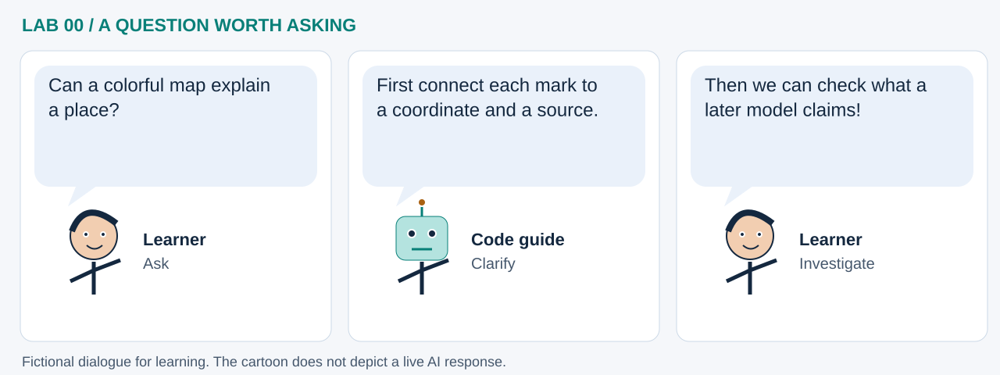

LAB 00 · 32-SECOND VISUAL WALKTHROUGH
A map is a data recipe
How do coordinates and layers become an explorable map?
Silent, captioned storyboard. Use the player to pause, seek or change playback speed. On a small screen, use fullscreen or read the transcript below. The diagrams explain the method; they are not recordings of a live model run.
Download MP4 · Captions · Open infographic at full size

What runs here?
Python constructs a map recipe; GeoLibre's hosted viewer renders it in your browser. Remote assets and basemaps need network access.
Spatial foundation: this notebook does not fit a learning model.
Transcript and code landmarks
- 00–08s · Locate
A coordinate pair tells the map where to look: longitude first, latitude second.
center=(-98, 39) - 08–16s · Layer
Vector places and raster elevations answer different questions about the same map.
m.add_geojson(...) - 16–24s · Inspect
Display the map and compare a point with the raster beneath it.
m - 24–32s · Preserve
Keep the recipe so the source addresses and styling remain inspectable.
m.to_project()
The common misconception

Read the cartoon dialogue
- Can a colorful map explain a place?
- First connect each mark to a coordinate and a source.
- Then we can check what a later model claims!
Try explaining it
What changes if you change zoom, and what changes if you change longitude?
Check your reasoning
Zoom changes the view. Changing a feature's longitude changes its position. Neither alone trains a model.
Original educational illustrations and captions authored for this repository. See the notebook for data and software citations.